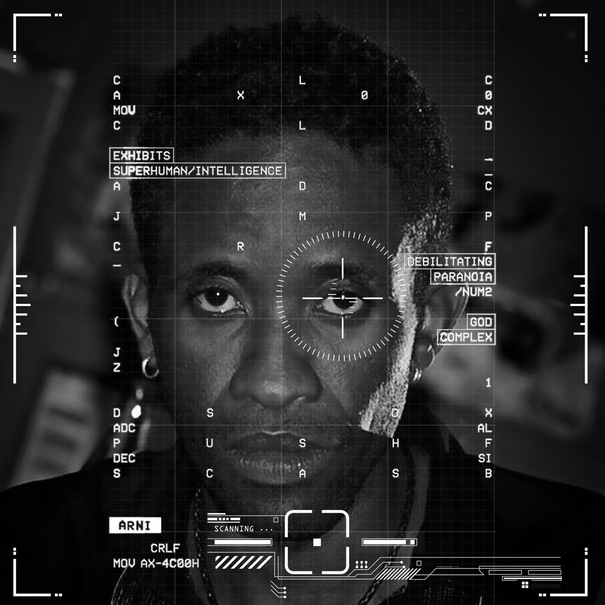
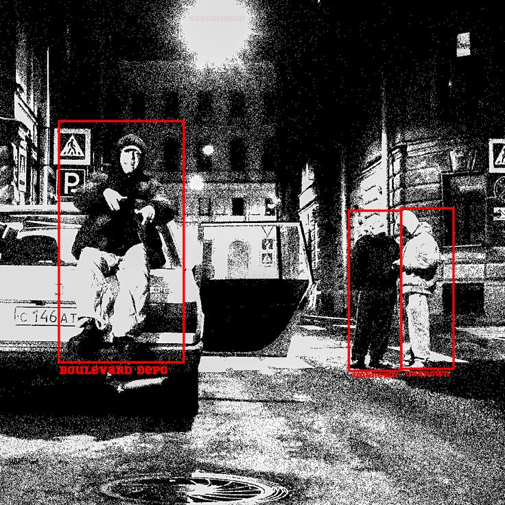
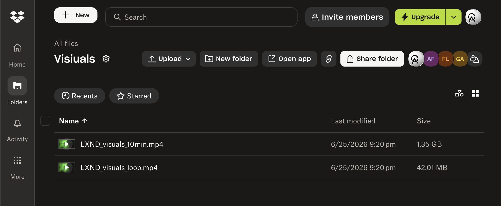

LXND × A$AP Rocky Tour
A hyper-real war-scene stage loop, brainstormed, built, and delivered in a single same-night sprint, made for LXND's full set on A$AP Rocky's Don't Be Dumb tour.
It started with a phone call from Dylan.
This whole thing started with my boy Dylan Green. Dylan was a background dancer in A$AP Rocky's Governors Ball performance plus a few other shows, so he's really plugged into that world. He's the one who saw the story go up from CULT looking for people to make stage visuals who knew 3D, and he called me immediately telling me I needed to hop on it and reach out ASAP.
So I did. I DM'd CULT, told him my boy Dylan Green sent me and that I make 3D stage visuals. Dylan said I should email him too, which was a good call, so I cooked up an email and sent that over. Then I asked Dylan if he could give me more names to reach out to, and he sent me a whole list.


The creative got built in a group chat.
From there the three of us, me, Dylan, and Mithran, got the "asap shit" group chat going at 5:44 PM EST that evening to brainstorm, and that's where the creative direction really got built. Mithran is one of Dylan's best friends and a good friend of mine too, someone I've met and know personally, and Dylan pulled him into the project early on because he knew Mithran would be a real asset on the creative team, deep in this tour and the vibe. Fast and totally no-ego, I'd throw something out, they'd react in real time, and we kept building on each other. Dylan came in steering the vibe right away, army not SWAT, here's the feel, dropping reference boards, and he basically handed me my whole client question list: the three main images they pictured, whether they wanted AWGE incorporated, realistic or glitchy, and most importantly what songs it was for. He kept hammering that the songs were the single most important thing to nail.
Mithran came through huge. He knows this whole tour world and the vibe inside out, which is exactly why Dylan brought him in, and being a DJ he went and re-listened to the artist's discography to lock the aesthetic even tighter. He pulled together a mood board with fire references that nailed our direction fast: army not SWAT, grunge, heavy haze and smoke, glitchy strobe, a hint of CCTV, soldiers with guns but only selectively and with red lasers off them, heavy helicopter visuals using the propeller blades to transition between scenes, even chopping the music video into black and white with boxes flashing over faces.


Mithran's mood board
The actual board Mithran pulled together, the references that locked the whole direction: red HUD scopes, surveillance and CCTV, black-and-white targeting, glitch, smoke. We built straight toward this.






References collected on Pinterest, full credit to the original creators. View the full board →
I called the client before I touched a single file.
On the outreach the one who bit was thelxnd, Anthony, within about five minutes on Instagram. And I didn't just text him back, I called him immediately, I wanted to actually talk to the guy. On the call he told me exactly what he wanted: soldiers walking toward the camera, a battlefield war-zone vibe, and to swag it out. This was for LXND, an opener on the A$AP Rocky tour, so it was part of the Rocky tour, but the visuals were for LXND's own set, his whole set start to finish, not Rocky's main show.
Right there on the call I came back with questions to pin it down, the environment, the colors, the tour colors, the soldiers' outfits, then followed up over text with the rest of Dylan's list. I sent the mood board to confirm direction, he locked it to a single QR code, and on the songs he told me it was for every song of his set, so I realized this wasn't about scoring one track, he wanted a specific vibe carrying the whole set. He could tell I had it locked because he was looking right at the board. Dylan reminded me to nail the screen dimensions since those stage screens are huge, so I got the spec from Anthony: 1920×1080, horizontal.


ChatGPT couldn't do it. Midjourney could.
Then it was go time on the art. I started cooking thumbnails in ChatGPT, but they weren't good enough, not realistic, with imperfections I didn't love. So I jumped to Midjourney, ran the same prompts plus variations, and got results I loved. I'd take the one I loved and bring it to life using Midjourney's video mode with written prompts, directing it to do exactly what I wanted. Midjourney was my speed play, it kicked out usable motion fast so I could throw things together quickly, even if you could tell it was AI in spots.


The shot list
I couldn't just have them walking at the camera, I needed real angles.

They only had a video of the logo. So I rebuilt it.
The logo was its own little mission. Casper, on the media team, jumped in to help, but the guy who made the logo had only ever sent a video of it, no GLB, SVG, or PNG. The video wasn't even great quality, but I knew I could work with it, so I screenshotted a frame and used my own software to pull the logo cleanly out, converted it to a PNG, and built an SVG from it. The plan was a custom 3D version dropped into the scene with an HDRI of the real environment so it'd sit perfectly in the shot. I had everything I needed, but I ran out of time, so the logo became a next-show thing, locked and ready.
Built it all in red. Flipped it green in one move.
It started all red, since we were going off the main A$AP Rocky vibe and my mood board was red. Then Anthony and Casper both hit me to switch it to green, the call came from Thoto on their end, and I was already deep into building in red. My solve in After Effects was two compositions: the first was my movement and motion comp where I organized and chopped all the raw clips together, and the second was the final comp at 1920×1080, matched to the pixel map, where I dropped the first comp inside and applied a single hue rotate from red to green. Everything flipped in one move and I never had to redo a clip, I just kept building in red the whole time to match the board and flipped the switch at the end. Mithran pointed out the green actually set it apart from Rocky's red anyway.

Then I hand-treated it.
In that same final comp I hand-treated the whole thing to sell it. I rode curves of random blur in and out at different points, ran a constant stream of monochrome grain that I kept pushing and pulling, varying the size and amount up and down so it breathed almost like CCTV footage, and gave the shots their own fades, coming up from black and falling back to black, so when the thing looped it never cut harshly, it just flowed.

They said pop it on screen. I baked it into the world.
The QR codes they sent were a really dark black-gray on transparent backgrounds, too dark to read clean, so I brought one into Adobe Illustrator, vectorized it, and recolored it white. Then in Photoshop I built the thumbnail, carving a space into the back vest of one of the soldiers and placing that white QR code on it, and made the in and out frames, the start and end points, and exported them. Those frames went into Wan 2.7's video editor to animate. The trick is that if you only give the AI a single endpoint, the QR code gets mangled and won't scan, so I gave Wan both an in point and an out point. Wan holds the animation's integrity way better so the code stays sharp, the tradeoff being it takes longer to cook, which is exactly why I used Midjourney for the fast stuff and saved Wan for what had to stay crisp.
On top of that they wanted the QR code up once a minute, but my loop was only 25 seconds with the QR code at the very end, so in the final comp I duplicated the loop across the full ten minutes and stripped the QR code off the end of every other pass, so it surfaced about once a minute like they asked.


Files named, labeled, delivered. Nothing lost.
Then we landed it. I talked to Anthony, exported the final loop, then made a ten-minute version since that's how long it needed to run for LXND's set. I asked them to send the Dropbox link, uploaded everything, named every file correctly and made sure they knew exactly which file was which, staying as organized as I could the whole way. Files were fully uploaded by 9:20 PM EST, so from the group chat kicking off at 5:44 PM EST to delivery, the entire thing was about a three-and-a-half-hour sprint. They loved it. Casper told me I did the damn thing.
That obsession with staying organized is exactly why I built my agents the way I did. They take my raw files, look at the clips and understand what each one is, rename them properly, sort them into a full client file system, and stand up a shared delivery folder at the end, so even on a chaotic same-night turnaround nothing got lost and the client got something clean and labeled.



On stage, on the A$AP Rocky tour.
The loop ran for LXND's full set. Soldiers walking toward the camera, the full After Effects treatment, the in-world QR code surfacing once a minute, all at 1920×1080, built and delivered in a single night.
What shipped, and what's next.
Shipped for the show
Hyper-real soldiers walking toward the camera. The full After Effects treatment, red-to-green hue rotate, random blur curves, pulsing monochrome CCTV grain, black fades between shots. A seamless 25-second loop expanded to a clean 10 minutes. The in-world white QR code baked onto a soldier's back vest, surfacing about once a minute. All at 1920×1080, for LXND's full set.
Locked for the next show
The LXND logo as a custom 3D asset matched into the scene with a real-environment HDRI. The tanks. The helicopter and propeller-blade transitions. More clips and shot variety. Extra glitch passes. Everything that got cut for the clock is prepped and ready to build on.
Built fast, built together.
Who did what
Tool chain
↓
Midjourney + video mode (fast stills + motion)
↓
Adobe Illustrator (QR code vectorized + whitened)
↓
Photoshop (QR code on vest + in/out frames, logo pull)
↓
Wan 2.7 video editor (in/out points, QR code integrity)
↓
After Effects (two-comp, hue rotate, grain, fades, loop + QR code timing)
"asap shit" group chat 5:44 PM EST → files uploaded 9:20 PM EST. June 25, 2026. Brainstorm to delivery.